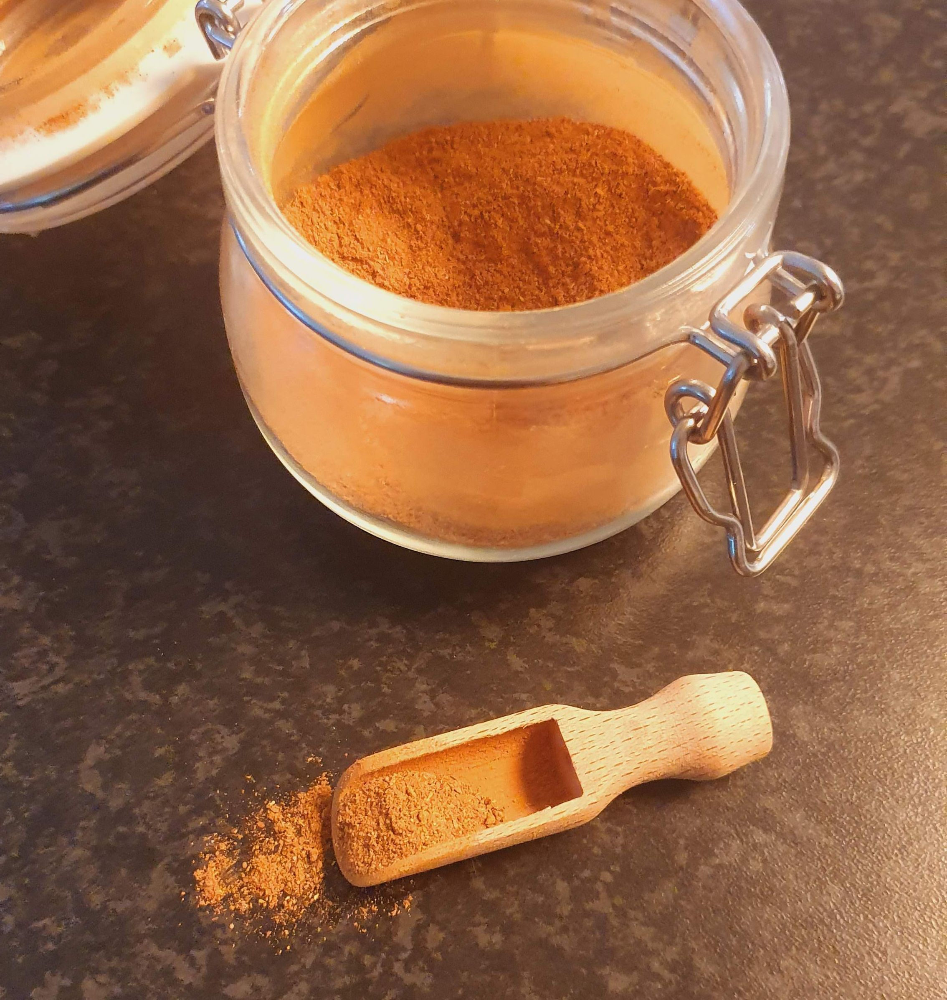

Speculaas Spice Mix
The Dutch variety of gingerbread spice. It is known as speculaas in Dutch, and sometimes also called speculoos. It can be used in any dessert, but the flavor really shines when it has been baked.
metadata
Created on 2020-12-14
Estimated time needed: At least 4 minutes. At most 4 minutes.
Ingredients
| 20 | g | ground cinnamon | 1 tbsp is about 7.8 g | |
| 4.4 | g | ground nutmeg | 1 tsp is about 2.6 g | |
| 4.3 | g | clove | 1 tsp is about 2.6 g | |
| 2.5 | g | white pepper | 1 tsp is about 3 g | |
| 2.5 | g | anise seeds | 1 tsp is about 1.7 g | |
| 2 | g | ground cardemom | 1 tsp is about 2 g | |
| 1.6 | g | ground ginger | 1 tsp is about 2 g | |
| 0.6 | g | dried orange zest | Optional, zest from about half an orange |
Scaling
Timeline
Directions
⌛ Active time 1 minutes | Passive time 1 minutes
- 4.3 g clove | 1 tsp is about 2.6 g
- 2.5 g anise seeds | 1 tsp is about 1.7 g
- 2.5 g white pepper | 1 tsp is about 3 g
Grind spices:
Grind any of the spices that you don't have ground yet. I like to use cloves, anise seeds and pepper fresh, but feel free to use any of the other ingredients fresh instead.
⌛ Active time 1 minutes | Passive time 1 minutes
- 20 g ground cinnamon | 1 tbsp is about 7.8 g
- 4.4 g ground nutmeg | 1 tsp is about 2.6 g
- 2 g ground cardemom | 1 tsp is about 2 g
- 1.6 g ground ginger | 1 tsp is about 2 g
- 0.6 g dried orange zest | Optional, zest from about half an orange
Mix everything together:
Mix all the spices (which should be ground by now) together in a bowl.